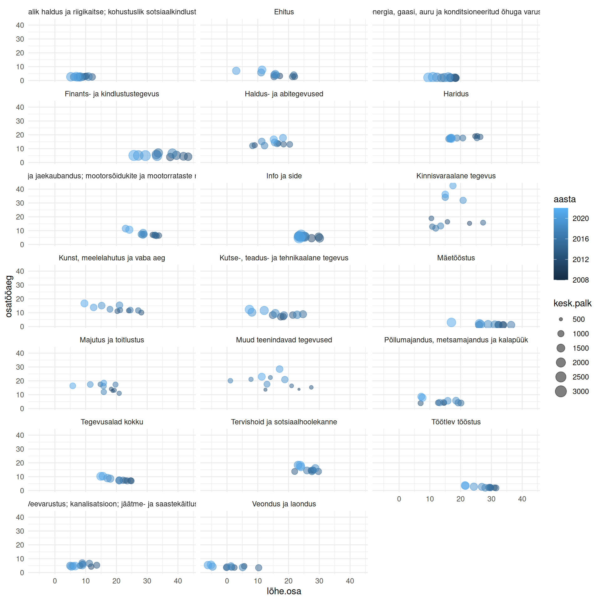

Andmete edasiseks analüüsimiseks ette valmistamine kipub olema kogu andmeanalüüsi kõige aeganõudvam osa. Andmeanalüütikud ise on hinnanud, et kogu andmeanalüüsi käigus veedavad nad umbes 80% ajast andmeid korrastades (Kelleher & Tierney, 2018; Wickham, 2014). Sekundaarandmed ei ole peaaegu kunagi täpselt selliselt vormistatnud nagu meie poolt valitud protseduur seda eeldab, mistõttu ilma oskuseta andmeid korrastada ei ole nendega enamasti suurt midagi teha.
Alljärgnevalt uurime keskmist brutopalka ja palgalõhet Eestis ning nendega seotud näitajaid.
6.1 Veeru nimetused
Kui oleme andmed töölauale laadinud, siis esmalt on mõistlik saada nendest ülevaade. Selleks kasutame juba tuttavaid funktsioone objekti esimeste ridade (head()) ja ülesehituse (str()) kuvamiseks.
head(palk)
Näitaja Tegevusala Vaatlusperiood
1 Keskmine brutokuupalk, eurot Kokku – kõik tegevusalad 2002 I kvartal
2 Keskmine brutokuupalk, eurot Kokku – kõik tegevusalad 2002 II kvartal
3 Keskmine brutokuupalk, eurot Kokku – kõik tegevusalad 2002 III kvartal
4 Keskmine brutokuupalk, eurot Kokku – kõik tegevusalad 2002 IV kvartal
5 Keskmine brutokuupalk, eurot Kokku – kõik tegevusalad 2003 I kvartal
6 Keskmine brutokuupalk, eurot Kokku – kõik tegevusalad 2003 II kvartal
PA001..KESKMINE.BRUTOPALK..TÖÖJÕUKULU..TÖÖTATUD.TUNNID.JA.TÖÖTAJATE.ARV
1 366
2 406
3 374
4 416
5 405
6 442
str(palk)
'data.frame': 7680 obs. of 4 variables:
$ Näitaja : chr "Keskmine brutokuupalk, eurot" "Keskmine brutokuupalk, eurot" "Keskmine brutokuupalk, eurot" "Keskmine brutokuupalk, eurot" ...
$ Tegevusala : chr "Kokku – kõik tegevusalad" "Kokku – kõik tegevusalad" "Kokku – kõik tegevusalad" "Kokku – kõik tegevusalad" ...
$ Vaatlusperiood : chr "2002 I kvartal" "2002 II kvartal" "2002 III kvartal" "2002 IV kvartal" ...
$ PA001..KESKMINE.BRUTOPALK..TÖÖJÕUKULU..TÖÖTATUD.TUNNID.JA.TÖÖTAJATE.ARV: num 366 406 374 416 405 442 411 455 431 474 ...
Näeme, et neljandal veerul on pikk ja lohisev nimetus. Andmetabel veeru nimetusi saame kuvada funktsiooniga names() ja selle funktsiooni nimetust kasutades saame ka neljandale veerule uue nime anda.
Andmetabeli ülesehituse küsimisel kuvatakse ka iga tunnuse tüüp, millest sagedasemad on arvtunnus (num) ja nimitunnus (chr). Täpsemalt loe mõõtmise tasemete ja tunnuse tüüpide kohta peatükist 8.
str(palk)
'data.frame': 7680 obs. of 4 variables:
$ Näitaja : chr "Keskmine brutokuupalk, eurot" "Keskmine brutokuupalk, eurot" "Keskmine brutokuupalk, eurot" "Keskmine brutokuupalk, eurot" ...
$ Tegevusala : chr "Kokku – kõik tegevusalad" "Kokku – kõik tegevusalad" "Kokku – kõik tegevusalad" "Kokku – kõik tegevusalad" ...
$ Vaatlusperiood: chr "2002 I kvartal" "2002 II kvartal" "2002 III kvartal" "2002 IV kvartal" ...
$ väärtus : num 366 406 374 416 405 442 411 455 431 474 ...
Pea meeles!
Tunnuse tüüp peab olema objektis määratud vastavalt tunnuse mõõtmise tasemele. Arvud peavad olema objektides salvestatud arvtunnusena ning sõnad ja laused nimitunnusena. Vastupidisel juhul käsitlevad funktsioonid tunnuseid valesti ega võimalda rakendada vajalikke tehteid.
Tunnuse tüüp on oluline selleks et funktsioonid oskaksid neid õigesti kasutada. Nt kui arve sisaldav veerg on laaditud mingil põhjusel1 objekti nimitunnusena, siis ei ole võimalik sellise tunnusega matemaatilisi tehteid teha. Kui aga andmetabelis on mingi vaatluse kood (nt isikukood), mille R keel tuvastab arvtunnusena, siis on mõistlik salvestada see nimitunnusena, et mitte selle alusel kogemata arvutusi teha. Tunnuste tüübi teisendamiseks saab kasutada funktsioone as.character() ja as.numeric().
1 Kui arve sisaldavasse veergu on sattunud mõni sõna, täht, kirjavahemärk vms, siis R loeb selles veerus olevad väärtused enamasti nimitunnusteks.
# Kui arvud on salvestatud nimitunnusena, siis ei saa arvutata keskmist.palk$väärtus <-as.character(palk$väärtus)head(palk$väärtus) %>% mean
Warning in mean.default(.): argument is not numeric or logical: returning NA
[1] NA
# Kui arvtunnus on õigesti sisestatud, siis saab selle alusel ka arvutada.palk$väärtus <-as.numeric(palk$väärtus)head(palk$väärtus) %>% mean
[1] 401.5
6.3 Kordumatud väärtused
Eelnevalt kuvatud andmetabeli puhul huvitab meid ilmselt, mis võimalikud väärtused on veergudes “Näitaja”, “Tegevusala” ja “Vaatlusperiood”. Kuna tabelis on 7680 rida, siis ei ole otstarbekas kuvada kõiki väärtusi, vaid ainult neid, mis ei kordu. Selleks on käsklus unique().
unique(palk$Näitaja)
[1] "Keskmine brutokuupalk, eurot"
[2] "Keskmine kuutööjõukulu töötaja kohta, eurot"
[3] "Osalise tööajaga töötajate töötatud tundide osakaal, %"
[4] "Keskmine töötajate arv, taandatud täistööajale"
unique(palk$Tegevusala)
[1] "Kokku – kõik tegevusalad"
[2] "Põllumajandus, metsamajandus ja kalapüük"
[3] "Mäetööstus"
[4] "Töötlev tööstus"
[5] "Elektrienergia, gaasi, auru ja konditsioneeritud õhuga varustamine"
[6] "Veevarustus; kanalisatsioon; jäätme- ja saastekäitlus"
[7] "Ehitus"
[8] "Hulgi- ja jaekaubandus; mootorsõidukite ja mootorrataste remont"
[9] "Veondus ja laondus"
[10] "Majutus ja toitlustus"
[11] "Info ja side"
[12] "Finants- ja kindlustustegevus"
[13] "Kinnisvaraalane tegevus"
[14] "Kutse-, teadus- ja tehnikaalane tegevus"
[15] "Haldus- ja abitegevused"
[16] "Avalik haldus ja riigikaitse; kohustuslik sotsiaalkindlustus"
[17] "Haridus"
[18] "Tervishoid ja sotsiaalhoolekanne"
[19] "Kunst, meelelahutus ja vaba aeg"
[20] "Muud teenindavad tegevused"
unique(palk$Vaatlusperiood)
[1] "2002 I kvartal" "2002 II kvartal" "2002 III kvartal" "2002 IV kvartal"
[5] "2003 I kvartal" "2003 II kvartal" "2003 III kvartal" "2003 IV kvartal"
[9] "2004 I kvartal" "2004 II kvartal" "2004 III kvartal" "2004 IV kvartal"
[13] "2005 I kvartal" "2005 II kvartal" "2005 III kvartal" "2005 IV kvartal"
[17] "2006 I kvartal" "2006 II kvartal" "2006 III kvartal" "2006 IV kvartal"
[21] "2007 I kvartal" "2007 II kvartal" "2007 III kvartal" "2007 IV kvartal"
[25] "2008" "2008 I kvartal" "2008 II kvartal" "2008 III kvartal"
[29] "2008 IV kvartal" "2009" "2009 I kvartal" "2009 II kvartal"
[33] "2009 III kvartal" "2009 IV kvartal" "2010" "2010 I kvartal"
[37] "2010 II kvartal" "2010 III kvartal" "2010 IV kvartal" "2011"
[41] "2011 I kvartal" "2011 II kvartal" "2011 III kvartal" "2011 IV kvartal"
[45] "2012" "2012 I kvartal" "2012 II kvartal" "2012 III kvartal"
[49] "2012 IV kvartal" "2013" "2013 I kvartal" "2013 II kvartal"
[53] "2013 III kvartal" "2013 IV kvartal" "2014" "2014 I kvartal"
[57] "2014 II kvartal" "2014 III kvartal" "2014 IV kvartal" "2015"
[61] "2015 I kvartal" "2015 II kvartal" "2015 III kvartal" "2015 IV kvartal"
[65] "2016" "2016 I kvartal" "2016 II kvartal" "2016 III kvartal"
[69] "2016 IV kvartal" "2017" "2017 I kvartal" "2017 II kvartal"
[73] "2017 III kvartal" "2017 IV kvartal" "2018" "2018 I kvartal"
[77] "2018 II kvartal" "2018 III kvartal" "2018 IV kvartal" "2019"
[81] "2019 I kvartal" "2019 II kvartal" "2019 III kvartal" "2019 IV kvartal"
[85] "2020" "2020 I kvartal" "2020 II kvartal" "2020 III kvartal"
[89] "2020 IV kvartal" "2021" "2021 I kvartal" "2021 II kvartal"
[93] "2021 III kvartal" "2021 IV kvartal" "2022 I kvartal" "2022 II kvartal"
Näeme, et vaatlusperioodi veerus on läbisegi aastad ja kvartalid. Kui teisendame vastava tunnuse arvtunnuseks, siis tähti sisaldavad väärtused muutuvad puuduvateks väärtusteks.
Kui andmetes esineb puuduvaid väärtusi, siis on kolm peamist viisi, kuidas nendega tekkivaid probleeme lahendada.
Enamasti eemaldatakse andmetabelist vaatlused (read), milles esinevad puuduvad väärtused.
Kui on teada, et puuduvad väärtused esinevad juhuslikult, siis on lihtne viis on asendada need veeru keskmise väärtusega.
Õigem on tuletada puuduvad väärtused aga teiste veergude väärtuste alusel. Tõeste väärtuse prognoosimiseks on palju erievaid võimalusi, sh masinõpe.
Kui puuduvaid väärtusi soovitakse analüüsi kaasata või eraldi uurida, siis saab need eraldi väärtusega määratleda. Puuduvate nimitunnuse väärtustele võib anda mingi nimetuse, arvtunnuse korral võib puuduvad väärtused määratleda eraldi veerus loogilise muutujana.
Vaatlusperioodi teisendamise tulemusel on nüüd vastavas veerus puuduvad väärtused nendel juhtudel, kus lisaks aastaarvule oli kirjas ka kvartal. Seega saame tabelisse alles jätta vaid aastaid esindavad väärtused kui eemaldame need read, kus vaatlusperiood puudub. Puuduvate väärtuse määratlemiseks saame kasutada funktsiooni is.na() ja olemasolevate väärtuse valimiseks peame seega lisaman funktsiooni ette loogikaoperaatori !.
# Algne ridade arvnrow(palk)
[1] 7680
# Sõelume välja väärtused, kus vaatlusperiood ei ole puudu.palk <-filter(palk, !is.na(Vaatlusperiood))# Ridade arv pärast puuduvate väärtustega ridade eemaldamistnrow(palk)
[1] 1120
Teine võimalus on kasutada funktsiooni complete.cases(), mis väljastab andmetabelis puuduvate väärtusteta read määrava tõeväärtuse, võttes puuduvate väärtuse määramisel arvesse kõiki veerge.
# Valime read, kus on ainult täielikud vaatlusedpalk <- palk[complete.cases(palk), ]# Eemaldame puuduvate väärtustega readpalk <-na.omit(palk)
6.5 Väärtuste asendamine
Mõnikord esineb andmetes väärtusi, mis ei ole teoreetiliselt võimalikud. Sellisel juhul on kolm viisi, kuidas sobimatud väärtused kõrvaldada.
Arvtunnuse korral saab ebasobiva väärtuse asendada vastavalt vähima või suurima teoreetiliselt võimaliku väärtusega.
Võimalusel saab eemaldada kogu ebasobivaid väärtuseid sisaldava tunnuse.
Ebasobivaid väärtusi saab kohelda nii nagu puuduvaid väärtuseid.
Kui oletame, et meie andmetabelis oleval ajavahemikul oli alampalk kõige vähem 278 eurot kuus, siis ei tohiks olla väärtuseid, kus keskmine brutokuupalk on sellest madalam.
# Tekitame uue andmetabeli ainult kõikide tegevusalade keskmise kuupalgagabruto <-filter(palk, Näitaja =='Keskmine brutokuupalk, eurot'& Tegevusala =='Kokku – kõik tegevusalad')# Määrame väärtuseks 278 juhtudel, kus väärtus on vähem kui 278bruto$väärtus[bruto$väärtus <278] <-278
6.6 Väärtuste teisendamine
Väärtuste teisendamise käigus antakse tunnusele uued väärtused lähtudes algsetest väärtustest. Selleks on mitu põhjust ja viisi.
Kui tunnusel on palju äärmuslikul suuri või väikseid väärtusi, siis selline tunnus ei sobi paljude parameetriliste meetodite rakendamiseks. Sellisel juhul saab kasutada erinevaid matemaatilisi teisendusi, mis muudab väärtuste jaotuse sümmeetrilisemaks2.
Teatud meetodid eeldavad, et andmed on mõõdetud samal skaalal ehk omavad sarnaseid väärtusi. Sellisel juhul saame väärtused standardiseerida.
Kui tunnusel on rohkem kordumatuid väärtusi kui soovime, siis saame väärtused intervallida.
2 Kui tunnusel on palju äärmuslikult suuri jaotusi, siis naturaallogaritm väärtustest annab tulemuseks sümmeetrilise jaotuse.
Kui soovime keskmise brutokuupalga esitada 500 euro laiuste intervallidena, siis saame intervallimiseks kasutada funktsiooni cut().
Andmetabelisse saab lisada tunnuseid või neid muuta muuhulgas ka funktsiooni mutate() abil.
# Mis aastatel oli keskmine brutotöötasu üle keskmise?bruto <-mutate(bruto, ülekeskmise = väärtus >mean(väärtus))head(bruto)
Näitaja Tegevusala Vaatlusperiood väärtus
1 Keskmine brutokuupalk, eurot Kokku – kõik tegevusalad 2008 825
2 Keskmine brutokuupalk, eurot Kokku – kõik tegevusalad 2009 784
3 Keskmine brutokuupalk, eurot Kokku – kõik tegevusalad 2010 792
4 Keskmine brutokuupalk, eurot Kokku – kõik tegevusalad 2011 839
5 Keskmine brutokuupalk, eurot Kokku – kõik tegevusalad 2012 887
6 Keskmine brutokuupalk, eurot Kokku – kõik tegevusalad 2013 949
intervallid ülekeskmise
1 >500...1000 FALSE
2 >500...1000 FALSE
3 >500...1000 FALSE
4 >500...1000 FALSE
5 >500...1000 FALSE
6 >500...1000 FALSE
6.7 Korrasandmed
Korrasandmed (tidy data(Wickham, 2014)) on andmetabeli vormistamise viis, mille korral
iga tunnus on eraldi veerus,
iga vaatlus on eraldi real,
iga vaatluste aluseks olev üksus on omaette tabelis3.
3 Nt tellimuste tabelis ei peaks olema kõiki tellija tunnuseid, vaid tellimused ja tellijad tuleks hoida eraldi tabeltes ning ainult vajaduse korral need tellija koodi alusel kokku viia.
6.7.1 Andmetabeli laiendamine
Meie andmed brutotöötasu kohta vastavad tingimusele, et iga vaatlus (mõõtmine) on eraldi real. Kui lähtume aga sellest, et iga näitaja on omaette tunnus, siis peaks iga näitaja väärtused olema eraldi veerus, et meie andmed korrasandmete tingimusele vastaksid.
head(palk)
Näitaja Tegevusala Vaatlusperiood väärtus
1 Keskmine brutokuupalk, eurot Kokku – kõik tegevusalad 2008 825
2 Keskmine brutokuupalk, eurot Kokku – kõik tegevusalad 2009 784
3 Keskmine brutokuupalk, eurot Kokku – kõik tegevusalad 2010 792
4 Keskmine brutokuupalk, eurot Kokku – kõik tegevusalad 2011 839
5 Keskmine brutokuupalk, eurot Kokku – kõik tegevusalad 2012 887
6 Keskmine brutokuupalk, eurot Kokku – kõik tegevusalad 2013 949
Sellist andmetabelit, milles iga rida sisaldab ainult ühte väärtust, võiks nimetada täielikult kitsaks. Selline kitsas andmetabel ei pruugi olla kõige sobivam viis selles olevate andmete analüüsimiseks. Nt on praegu keeruline võrrelda kahe näitaja väärtusi, sest need väärtused on kõik ühes veerus. Kui soovime tõsta iga näitaja eraldi veergu ehk antud juhul andmetabelit laiendada, siis saame selleks kasutada funktsiooni pivot_wider().
# A tibble: 6 × 6
Tegevusala Vaatlusperiood Keskmine bru…¹ Keskm…² Osali…³ Keskm…⁴
<chr> <dbl> <dbl> <dbl> <dbl> <dbl>
1 Kokku – kõik tegevusalad 2008 825 1113 6.4 543432
2 Kokku – kõik tegevusalad 2009 784 1067 8.2 488166
3 Kokku – kõik tegevusalad 2010 792 1074 8.1 458523
4 Kokku – kõik tegevusalad 2011 839 1137 7.3 469123
5 Kokku – kõik tegevusalad 2012 887 1203 7.2 489054
6 Kokku – kõik tegevusalad 2013 949 1284 7 487591
# … with abbreviated variable names ¹`Keskmine brutokuupalk, eurot`,
# ²`Keskmine kuutööjõukulu töötaja kohta, eurot`,
# ³`Osalise tööajaga töötajate töötatud tundide osakaal, %`,
# ⁴`Keskmine töötajate arv, taandatud täistööajale`
# Kuna veeru nimed sisaldavad nüüd tühikuid, siis nimetame need ümber.names(palk) <-c('tegevusala', 'aasta', 'kesk.palk', 'kesk.kulu', 'osatööaeg', 'töötajad')head(palk)
# A tibble: 6 × 6
tegevusala aasta kesk.palk kesk.kulu osatööaeg töötajad
<chr> <dbl> <dbl> <dbl> <dbl> <dbl>
1 Kokku – kõik tegevusalad 2008 825 1113 6.4 543432
2 Kokku – kõik tegevusalad 2009 784 1067 8.2 488166
3 Kokku – kõik tegevusalad 2010 792 1074 8.1 458523
4 Kokku – kõik tegevusalad 2011 839 1137 7.3 469123
5 Kokku – kõik tegevusalad 2012 887 1203 7.2 489054
6 Kokku – kõik tegevusalad 2013 949 1284 7 487591
Sellisel kujul tabeliga on meil võimalik erinevatel küsimustele vastamiseks arvutusi teha.
# Mitu eurot kulus keskmiselt tööjõumaksudeks?palk$kesk.maksud <- palk$kesk.kulu - palk$kesk.palkhead(palk)
# A tibble: 6 × 7
tegevusala aasta kesk.palk kesk.kulu osatööaeg töötajad kesk.m…¹
<chr> <dbl> <dbl> <dbl> <dbl> <dbl> <dbl>
1 Kokku – kõik tegevusalad 2008 825 1113 6.4 543432 288
2 Kokku – kõik tegevusalad 2009 784 1067 8.2 488166 283
3 Kokku – kõik tegevusalad 2010 792 1074 8.1 458523 282
4 Kokku – kõik tegevusalad 2011 839 1137 7.3 469123 298
5 Kokku – kõik tegevusalad 2012 887 1203 7.2 489054 316
6 Kokku – kõik tegevusalad 2013 949 1284 7 487591 335
# … with abbreviated variable name ¹kesk.maksud
Pea meeles!
Enamus funktsioone eeldavad, et funktsiooni argumentidena esitab kasutaja tunnuse väärtusi sisaldava veeru. Seetõttu tuleks andmetabel vormistada selliselt, et iga tunnuse väärtused on eraldi veerus.
6.7.2 Andmetabeli kitsendamine
Sageli on meil aga vastupidine olukord, kus ühe tunnuse väärtused on jagatud mitmesse veergu. See oli kunagi sagedane nt Statistikaameti tabelite korral, milles vaikimisi esitati iga aasta väärtused eraldi veerus. Sellisel kujul andmed sobivad küll aegridade joonistamiseks tabelarvutuse rakendustes, aga mitte R keele funktsioonide kasutamiseks.
All on esitatud Statistikaameti tabel PA5335 palgalõhe kohta, milles iga aasta väärtused on eraldi veerus.
Koondamaks kõikide aastate väärtused ühte veergu, tuleks seda andmetabelit kitsendada ehk pikendada. Seda saab teha nt funktsiooniga pivot_longer().
# Viime kõik aastad ühte veergulõhe <-pivot_longer(lõhe, cols =as.character(2011:2021), names_to ='aasta', values_to ='väärtus')head(lõhe)
# A tibble: 6 × 4
Tegevusala..EMTAK.2008. Näitaja aasta väärtus
<chr> <chr> <chr> <dbl>
1 Tegevusalad kokku Meestöötajate keskmine brutotunnipalk, … 2011 5.7
2 Tegevusalad kokku Meestöötajate keskmine brutotunnipalk, … 2012 5.7
3 Tegevusalad kokku Meestöötajate keskmine brutotunnipalk, … 2013 6.1
4 Tegevusalad kokku Meestöötajate keskmine brutotunnipalk, … 2014 6.4
5 Tegevusalad kokku Meestöötajate keskmine brutotunnipalk, … 2015 7
6 Tegevusalad kokku Meestöötajate keskmine brutotunnipalk, … 2016 7.6
# Viime iga näitaja eraldi veergulõhe <-pivot_wider(lõhe, names_from ='Näitaja', values_from ='väärtus')head(lõhe)
# A tibble: 6 × 5
Tegevusala..EMTAK.2008. aasta Meestöötajate keskmine brutotu…¹ Naist…² Palga…³
<chr> <chr> <dbl> <dbl> <dbl>
1 Tegevusalad kokku 2011 5.7 4.4 22.9
2 Tegevusalad kokku 2012 5.7 4.3 24.6
3 Tegevusalad kokku 2013 6.1 4.6 24.8
4 Tegevusalad kokku 2014 6.4 4.9 23.5
5 Tegevusalad kokku 2015 7 5.4 22.2
6 Tegevusalad kokku 2016 7.6 6 20.9
# … with abbreviated variable names
# ¹`Meestöötajate keskmine brutotunnipalk, eurot`,
# ²`Naistöötajate keskmine brutotunnipalk, eurot`, ³`Palgalõhe, %`
# A tibble: 6 × 5
tegevusala aasta mehed.palk naised.palk lõhe.osa
<chr> <chr> <dbl> <dbl> <dbl>
1 Tegevusalad kokku 2011 5.7 4.4 22.9
2 Tegevusalad kokku 2012 5.7 4.3 24.6
3 Tegevusalad kokku 2013 6.1 4.6 24.8
4 Tegevusalad kokku 2014 6.4 4.9 23.5
5 Tegevusalad kokku 2015 7 5.4 22.2
6 Tegevusalad kokku 2016 7.6 6 20.9
Pea meeles!
Korduvate mõõtmiste korral tuleks mõõtmise aeg kajastada eraldi veerus ja mitte jaotada sama tunnuse mõõtmisi erinevate veergude vahel.
6.8 Agregeerimine
Sageli on vaja andmetabelis olevad väärtused edasiseks analüüsiks kuidagi koondada. Väärtuste kokku võtmine mingite rühmade kaupa ja mingi tehte alusel on agregeerimine. Nii on agregeerimisel vaja määrata
väärtusi sisaldav kokku võetav tunnus,
väärtusi rühmitav tunnus,
kokkuvõtte aluseks olev tehe (funktsioon).
Andmetabeli agregeerimiseks on R keeles funktsioon aggregate(), mille argumentideks tuleb sisestada need kolm tegurit.
head(palk)
# A tibble: 6 × 7
tegevusala aasta kesk.palk kesk.kulu osatööaeg töötajad kesk.m…¹
<chr> <dbl> <dbl> <dbl> <dbl> <dbl> <dbl>
1 Kokku – kõik tegevusalad 2008 825 1113 6.4 543432 288
2 Kokku – kõik tegevusalad 2009 784 1067 8.2 488166 283
3 Kokku – kõik tegevusalad 2010 792 1074 8.1 458523 282
4 Kokku – kõik tegevusalad 2011 839 1137 7.3 469123 298
5 Kokku – kõik tegevusalad 2012 887 1203 7.2 489054 316
6 Kokku – kõik tegevusalad 2013 949 1284 7 487591 335
# … with abbreviated variable name ¹kesk.maksud
# Mis oli igal tegevusalal perioodi keskmise brutotöötasu keskmine?aggregate(kesk.palk ~ tegevusala, palk, mean)
tegevusala kesk.palk
1 Avalik haldus ja riigikaitse; kohustuslik sotsiaalkindlustus 1332.3571
2 Ehitus 1076.3571
3 Elektrienergia, gaasi, auru ja konditsioneeritud õhuga varustamine 1535.0714
4 Finants- ja kindlustustegevus 1822.4286
5 Haldus- ja abitegevused 959.2143
6 Haridus 974.4286
7 Hulgi- ja jaekaubandus; mootorsõidukite ja mootorrataste remont 988.1429
8 Info ja side 1820.7143
9 Kinnisvaraalane tegevus 826.7857
10 Kokku – kõik tegevusalad 1087.5714
11 Kunst, meelelahutus ja vaba aeg 864.0000
12 Kutse-, teadus- ja tehnikaalane tegevus 1286.5714
13 Mäetööstus 1330.0000
14 Majutus ja toitlustus 688.2857
15 Muud teenindavad tegevused 710.8571
16 Põllumajandus, metsamajandus ja kalapüük 932.2857
17 Tervishoid ja sotsiaalhoolekanne 1132.3571
18 Töötlev tööstus 1035.2143
19 Veevarustus; kanalisatsioon; jäätme- ja saastekäitlus 1092.7857
20 Veondus ja laondus 1065.8571
Teine võimalus agregeerimiseks on kasutada pakis tidyverse sisalduvaid funktsioone group_by() esmalt rühmitamiseks ja summarise() seejärel kokku võtmiseks.
head(lõhe)
# A tibble: 6 × 5
tegevusala aasta mehed.palk naised.palk lõhe.osa
<chr> <chr> <dbl> <dbl> <dbl>
1 Tegevusalad kokku 2011 5.7 4.4 22.9
2 Tegevusalad kokku 2012 5.7 4.3 24.6
3 Tegevusalad kokku 2013 6.1 4.6 24.8
4 Tegevusalad kokku 2014 6.4 4.9 23.5
5 Tegevusalad kokku 2015 7 5.4 22.2
6 Tegevusalad kokku 2016 7.6 6 20.9
# Mis oli igal tegevusalal kõige suurem palgalõhe?lõhe %>%group_by(tegevusala) %>%# Rühmitame andmetabeli tegevusala aluselsummarise(max(lõhe.osa)) # Leiame suurima palgalõhe
# A tibble: 20 × 2
tegevusala max(lõhe…¹
<chr> <dbl>
1 Avalik haldus ja riigikaitse; kohustuslik sotsiaalkindlustus 12.1
2 Ehitus 22
3 Elektrienergia, gaasi, auru ja konditsioneeritud õhuga varustamine 18.4
4 Finants- ja kindlustustegevus 43.3
5 Haldus- ja abitegevused 20.4
6 Haridus 26.4
7 Hulgi- ja jaekaubandus; mootorsõidukite ja mootorrataste remont 33.8
8 Info ja side 30.1
9 Kinnisvaraalane tegevus 27.3
10 Kunst, meelelahutus ja vaba aeg 28.1
11 Kutse-, teadus- ja tehnikaalane tegevus 24.7
12 Mäetööstus 36.4
13 Majutus ja toitlustus 20.9
14 Muud teenindavad tegevused 27.4
15 Põllumajandus, metsamajandus ja kalapüük 20.1
16 Tegevusalad kokku 24.8
17 Tervishoid ja sotsiaalhoolekanne 29.7
18 Töötlev tööstus 31.5
19 Veevarustus; kanalisatsioon, jäätme- ja saastekäitlus 13.6
20 Veondus ja laondus 10.3
# … with abbreviated variable name ¹`max(lõhe.osa)`
Väga sageli on kasu ka funktsioonist table(), mille abil saab väärtuseid loendada.
head(lõhe)
# A tibble: 6 × 5
tegevusala aasta mehed.palk naised.palk lõhe.osa
<chr> <chr> <dbl> <dbl> <dbl>
1 Tegevusalad kokku 2011 5.7 4.4 22.9
2 Tegevusalad kokku 2012 5.7 4.3 24.6
3 Tegevusalad kokku 2013 6.1 4.6 24.8
4 Tegevusalad kokku 2014 6.4 4.9 23.5
5 Tegevusalad kokku 2015 7 5.4 22.2
6 Tegevusalad kokku 2016 7.6 6 20.9
# Mitu korda iga tegevusala tabelis esineb?table(lõhe$tegevusala)
Avalik haldus ja riigikaitse; kohustuslik sotsiaalkindlustus
11
Ehitus
11
Elektrienergia, gaasi, auru ja konditsioneeritud õhuga varustamine
11
Finants- ja kindlustustegevus
11
Haldus- ja abitegevused
11
Haridus
11
Hulgi- ja jaekaubandus; mootorsõidukite ja mootorrataste remont
11
Info ja side
11
Kinnisvaraalane tegevus
11
Kunst, meelelahutus ja vaba aeg
11
Kutse-, teadus- ja tehnikaalane tegevus
11
Mäetööstus
11
Majutus ja toitlustus
11
Muud teenindavad tegevused
11
Põllumajandus, metsamajandus ja kalapüük
11
Tegevusalad kokku
11
Tervishoid ja sotsiaalhoolekanne
11
Töötlev tööstus
11
Veevarustus; kanalisatsioon, jäätme- ja saastekäitlus
11
Veondus ja laondus
11
# Mitmel aastal oli igal tegevusalal palgalõhe rohkem kui 10%?table(lõhe$tegevusala, lõhe$lõhe.osa >10)
FALSE TRUE
Avalik haldus ja riigikaitse; kohustuslik sotsiaalkindlustus 8 3
Ehitus 1 10
Elektrienergia, gaasi, auru ja konditsioneeritud õhuga varustamine 1 10
Finants- ja kindlustustegevus 0 11
Haldus- ja abitegevused 2 9
Haridus 0 11
Hulgi- ja jaekaubandus; mootorsõidukite ja mootorrataste remont 0 11
Info ja side 0 11
Kinnisvaraalane tegevus 0 11
Kunst, meelelahutus ja vaba aeg 1 10
Kutse-, teadus- ja tehnikaalane tegevus 2 9
Mäetööstus 0 11
Majutus ja toitlustus 1 10
Muud teenindavad tegevused 2 9
Põllumajandus, metsamajandus ja kalapüük 3 8
Tegevusalad kokku 0 11
Tervishoid ja sotsiaalhoolekanne 0 11
Töötlev tööstus 0 11
Veevarustus; kanalisatsioon, jäätme- ja saastekäitlus 8 3
Veondus ja laondus 10 1
Üleval olevast tabelist näeme muuhulgas, et
veonduses ja laonduses oli palgalõhe ainult ühel aastal üle 10%, samas kui
hariduses oli kõikidel aastatel palgalõhe üle 10%.
6.9 Tabelite ühendamine
Mõnikord on sama vaatluse andmed erinevates tabelites. Sellisel juhul saame kaks tabelit omavahel ühendada ühe või mitme tunnuse väärtuste alusel.
Käesolevates näidetes võiksime ühendada brutopalga ja palgalõhe andmetabelid palk ja lõhe. Mõlemas tabelis esindab iga rida ühte tegevusala ühel aastal, mistõttu saab nende kahe tunnuse alusel read kokku viia.
Selleks peavad sama tähendusega väärtused olema samamoodi nimetatud. Saame seda kontrollida funktsiooniga setdiff(), mis näitab, millised esimeses argumendis olevad kordumatud väärtused on puudu teisest argumendist.
# Milliseid palgalõhe tabelis olevaid tegevusalasid ei ole brutopalga tabelis?setdiff(lõhe$tegevusala, palk$tegevusala)
[1] "Tegevusalad kokku"
[2] "Veevarustus; kanalisatsioon, jäätme- ja saastekäitlus"
# Milliseid brutopalga tabelis olevaid tegevusalasid ei ole palgalõhe tabelis?setdiff(palk$tegevusala, lõhe$tegevusala)
[1] "Kokku – kõik tegevusalad"
[2] "Veevarustus; kanalisatsioon; jäätme- ja saastekäitlus"
Näeme, et kahes tabelis on samad nähtused kas erinevate nimetustega või siis on semikooloni asemel kastatud koma. Muudame väärtuste nimetused nii, et sama nähtus oleks täpselt samamoodi sõnastatud.
# Määrame palgalõhe tabelis tegevusalale semikooloni koma asemelelõhe$tegevusala[lõhe$tegevusala =='Veevarustus; kanalisatsioon, jäätme- ja saastekäitlus'] <-'Veevarustus; kanalisatsioon; jäätme- ja saastekäitlus'# Määrame brutopalga tabelis veerus tegevusala "Tegevusalad kokku" seal, # kus on pregu on "Kokku - kõik tegevusalad"palk$tegevusala[palk$tegevusala =='Kokku – kõik tegevusalad'] <-'Tegevusalad kokku'
Kaks tabelit saame ühendada funktsiooniga merge().
palkLõhe <-merge( palk, lõhe, by.x =c('tegevusala', 'aasta'), # Brutopalga tabeli ühendatavad tunnusedby.y =c('tegevusala', 'aasta'), # Palgalõhe tabeli ühendatavad tunnusedall.x =TRUE, # Jätame alles kõik brutopalga tabeli readall.y =TRUE) # Jätame alles kõik palgalõhe tabeli read# Meie andmetabelites on ühendatavad tunnused sama nimega, # seega võime mõned argumendid ära jätta või neid lihtsustadapalkLõhe <-merge(palk, lõhe, all =TRUE)head(palkLõhe)
tegevusala aasta kesk.palk
1 Avalik haldus ja riigikaitse; kohustuslik sotsiaalkindlustus 2008 1061
2 Avalik haldus ja riigikaitse; kohustuslik sotsiaalkindlustus 2009 981
3 Avalik haldus ja riigikaitse; kohustuslik sotsiaalkindlustus 2010 955
4 Avalik haldus ja riigikaitse; kohustuslik sotsiaalkindlustus 2011 988
5 Avalik haldus ja riigikaitse; kohustuslik sotsiaalkindlustus 2012 1037
6 Avalik haldus ja riigikaitse; kohustuslik sotsiaalkindlustus 2013 1130
kesk.kulu osatööaeg töötajad kesk.maksud mehed.palk naised.palk lõhe.osa
1 1434 2.6 34776 373 NA NA NA
2 1337 3.6 34693 356 NA NA NA
3 1297 3.4 34935 342 NA NA NA
4 1341 3.2 35034 353 6.2 5.5 10.2
5 1408 2.9 35138 371 5.8 5.3 9.8
6 1526 2.6 34552 396 6.4 5.7 12.1
Ühendatud tabeli alusel saame varem kahes eraldi tabelis olnud tunnuseid nüüd omavahel võrrelda. Näiteks saame uurida, kuidas on palgalõhe seotud osatööaja, keskmise palga ja tegevusalaga ning kuidas see seos aastate jooksul muutunud on.
ggplot(palkLõhe) +aes(x = lõhe.osa, y = osatööaeg, size = kesk.palk, color = aasta) +geom_point(alpha = .5) +facet_wrap(~tegevusala, ncol =3) +theme_minimal()

Kelleher, J. D., & Tierney, B. (2018). Data science. The MIT Press.